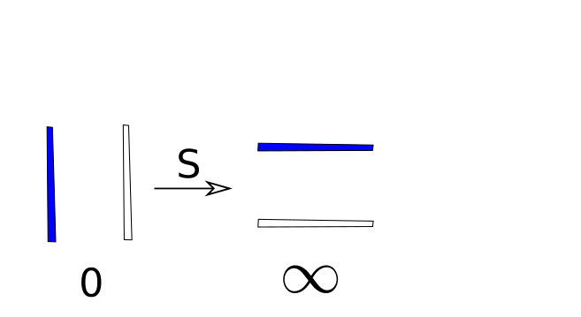

5.1. Verkefni 1
Bindum hnút með eftirfarandi runu V, V, V, S. Hvaða tala kemur út?
Lausn
\[\begin{split}0 \quad \substack{\longrightarrow \\ V} \quad 1 \quad \substack{\longrightarrow \\ V} \quad 2 \quad \substack{\longrightarrow \\ V} \quad 3 \quad \substack{\longrightarrow \\ S} \quad \frac{-1}{3}\end{split}\]
5.2. Verkefni 2
Annað flóknara dæmi.
Hvaða tala fæst með ef aðgerðunum V, V, S, V, V, S, V, V, V, S, V, S, V, V, V, V, V, S er beitt á 0?
Getið þið leyst hnútinn.
5.3. Verkefni 3
Bindið einhvern hnút og skrifið niður töluna sem tilheyrir honum. Látið annað lið leysa hnútinn.
Eruð þið komin með almenna aðferð til að leysa hnúta út frá tölunum?
5.4. Verkefni 4
Athugið hvað gerist þegar S er beitt á 0.
Lausn

Það er ekki hnútur á böndunum en þau liggja lárétt, en ekki lóðrétt eins og áður.
Talan sem svarar til þessa hnúts ætti að vera \(-\frac 10\) og spurningin er hvernig við eigum að túlka svona almennt brot. Ein leið til að hugsa um þetta er svona, eftir því sem nefnarinn er minni því stærri hluta af kökunni fáum við, því henni er skipt í færri sneiðar. Svo brotið \(\frac {1}0\) er stærra en \(\frac {1}1\) og einnig stærra en \(\frac {1}{1/1000} = 1000\). Þannig sjáum við að
\(\frac 10\) er ,,tala‘‘ sem er stærri en allar tölur og við táknum hana með \(\infty\) og köllum hana óendanlegt.
Aðvörun
Þó að við tölum hérna stundum um \(\infty\) sem tölu þá er óendanlegt ekki raunveruleg tala
því hefðbundnar reiknireglur virka ekki fyrir óendanlegt (hvað eru t.d. tvisvar sinnum óendanlegt).
Hvað gerist ef V er síðan beitt (einu sinni eða oftar) á þá útkomu?
Berið saman hvað gerist fyrir hnútinn þá og hvernig talan sem svarar til hnútsins breytist.
Hvernig túlkum við það.
Hvað gerist ef við beitum S tvisvar? Hvernig túlkum við það?
Lausn
Ef við beitum V á útkomuna þá breytist hnúturinn ekkert, og það alveg sama hversu oft við beitum V útkoman verður alltaf óbreytt. Fyrir tölurnar sem tákna hnútinn þá túlkum við þetta þannig að ef við bætum 1 við \(\infty\) þá er útkoman \(\infty\). Þetta passar við það að \(\infty\) sé stærri en allar tölur, þá má hún ekki stækka þegar bætt er við hana.
Ef við beitum S tvisvar þá erum við búin að snúa hnútnum hálfhring og endum aftur með hnútinn sem svarar til 0. Ef við skoðum hvernig tölurnar breytast þá fæst \(\infty\) með því að beita S einu sinni og þegar við beitum S aftur fæst \(-\frac 1\infty\). Ef við skiptum köku í óendanlega marga parta þá er hver partur ekki neitt, þannig að eina leiðin til að túlka þetta er með tölunni 0. Það er að segja við höfum endað aftur með töluna sem við byrjuðum með.
{kind=link}